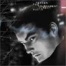

wide.video is an easy to use video editor that allows you to create your own awesome TikTok videos right in your web browser.
Include videos and photos taken with your camera, add audio-visual and transition effects, add background music and more.
No downloads or installations needed, no uploads to our server.
wide.video je snadno použitelný video editor, který vám umožní vytvářet vlastní úžasná TikTok videa přímo ve vašem webovém prohlížeči.
Zahrňte videa a fotografie pořízené vaší kamerou, přidejte audiovizuální a přechodové efekty, přidejte hudbu na pozadí a další.
Není potřeba žádné stahování ani instalace, žádné nahrávání na náš server.
wide.video is a browser-based application and runs locally on your computer.
You can access all of the media from your file system, without any need of cloud server communication or uploads.
Žádné Instalace Nebo Nahrávání
wide.video běží v prohlížeči lokálně na vašem počítači.
Můžete přistupovat ke všem médiím ze souborového systému, aniž byste potřebovali nahrávání na server.
Modern Codecs & Acceleration
Wide range of supported video & audio encoders and decoders including H.264, HEVC, AV1, AAC, MP3, GIF (and more). GPU-Accelerated video encoding.
Moderní Kodeky & Akcelerace
Široká škála podporovaných video a audio kodérů a dekodérů včetně H.264, HEVC, AV1, AAC, MP3, GIF (a dalších). GPU-akcelerované kódování videa.
Cross-Platform
Start video editing on your Mac, PC or Chromebook with ease while using your preferred web browser.
Cross-Platform
Začněte snadno upravovat video na svém Macu, PC nebo Chromebooku pomocí webového prohlížeče.
Unlimited Setup & Compositions
Full HD, 4K, portrait, landscape or square? 60 or 120 FPS. Use as many layers as you need for graphics, background videos, audio tracks.
Neomezené Nastavení & Kompozice
Full HD, 4K, portrét, krajina nebo čtverec? 60 nebo 120 FPS? Použijte tolik vrstev, kolik potřebujete pro grafiku, videa na pozadí, zvukové stopy.
No Signup, Fees Or Watermarks
Enjoy 100% free service, without paywalls or ads. No logins, no passwords required.
Bez Registrace Nebo Poplatků
Užijte si 100% bezplatnou službu, bez paywallů nebo reklam. Žádné přihlašování, žádné hesla.
Free Stock Media
Search and use royalty free stock videos, images and motion graphics.
Mediální Materiál Zdarma
Vyhledávejte a používejte bezplatná videa, obrázky a pohyblivou grafiku.
ComposerSkladatel
Background RemoverOdstraňovač Pozadí
Text to SpeechText na Řeč
Captions GeneratorGenerátor Titulků
Noise ReductionPotlačení Šumu
Silence RemoverOdstraňovač Ticha
Multicam SynchronizationMulticam Synchronizace
Changelog
Seznam Změn
1.6.142024-11-28
Added Text Animation filter with customizable in/out animations for texts and captions.
Přidán filtr Animace Textu s přizpůsobitelnými vstupními/výstupními animacemi pro texty a titulky.
Improved text, SVG and Lottie rendering.
Vylepšené vykreslování textu, SVG a Lottie.
1.6.132024-11-19
Added support for LUTs for advanced color grading.
Přidána podpora pro LUT pro pokročilé třídění barev.
Improved export error messages for better clarity and troubleshooting.
Vylepšené chybové zprávy exportu pro lepší přehlednost a řešení problémů.
1.6.122024-10-25
Added easing option for Speed Filter keyframes, and allowed zero speed for pausing.
Přidána možnost uvolnění pro klíčové snímky filtru Rychlost a povolená nulová rychlost pro pozastavení.
Improved timeline, including handling of speed keyframe adjustments.
Vylepšená časová osa, včetně umožnění úprav rychlosti klíčových snímků.
1.6.112024-10-14
Enhanced PWA support.
Vylepšená podpora PWA.
Improved history tracking.
Vylepšené sledování historie.
1.6.102024-10-10
Added Radial Zoom Blur Filter & Outline Filter.
Přidány filtry Radial Zoom Blur & Outline.
Added a History panel for better project version control.
Přidán panel Historie pro lepší kontrolu verzí projektu.
Added option to export a single image, ideal for thumbnails or previews.
Přidána možnost exportu jednoho obrázku, ideální pro miniatury nebo náhledy.
1.6.92024-09-26
Enhanced functionality of Mask and Colorkey filters.
Vylepšená funkčnost filtrů Maska a Barevný Klíč.
Added the option to use a clip as a source for clip (clone).
Přidána možnost použít klip jako zdroj pro klip (klon).
Improved preview canvas quality for sharper and more accurate visual.
Vylepšená kvalita náhledového plátna pro ostřejší a přesnější vizuál.
1.6.82024-09-11
Added support for unlimited export file sizes.
Přidána podpora pro neomezenou velikost exportovaných souborů.
Improved silence remover, waveforms renderings with peaks and averages.
Vylepšený odstraňovač ticha, vykreslování waveform s vrcholy a průměry.
1.6.72024-08-19
Added Gradient Fill & Rounded Corners filters.
Přidány filtry Přechodová Výplň & Zaoblené Rohy.
Added support for clip blend modes.
Přidána podpora pro režimy prolnutí klipů.
Added export stats and improved support for large exports.
Přidány exportní statistiky a vylepšená podpora pro velké exporty.
1.6.62024-07-30
Added Zoom filter, resembling the Ken Burns effect.
Přidán Zoom filtr, připomínající Ken Burns efekt.
Enhanced keyframe functionality.
Vylepšená funkce klíčových snímků.
1.6.52024-07-16
Added Keyboard Shortcuts Guide.
Přidán průvodce klávesovými zkratkami.
Added Glitch/VHS filter.
Přidán filter Závada/VHS.
1.6.42024-06-27
Added Multicam Synchronization tool.
Přidán nástroj Multicam Synchronizace.
Added support for GPU accelerated HEVC encoding.
Přidána podpora pro GPU akcelerované kódování HEVC.
1.6.32024-06-04
Added export video quality and compression options.
Přidána kvalita exportu videa a možnosti komprese.
Improved application and project caching.
Vylepšené ukládání aplikace a projektů do mezipaměti.
1.6.22024-05-23
UI/UX related improvements.
Vylepšení související s UI/UX.
1.6.12024-05-22
Added Background Remover tool.
Přidán nástroj pro odstraňování pozadí.
Enhanced performance for non-accelerated H.264 encoding.
Vylepšený výkon pro neakcelerované enkodování H.264.
Improved mask filter.
Vylepšený filtr masky.
1.6.02024-04-25
Improved support for animated and transparent APNG, AVIF, GIF, and WEBP images.
Vylepšená podpora pro animované a průhledné obrázky APNG, AVIF, GIF a WEBP.
Improved Firefox compatibility.
Vylepšená kompatibilita s Firefoxem.
Updated project directory structure.
Aktualizovaná struktura adresářů projektu.
1.5.112024-04-15
Smart Tools list added into menu bar for enhanced accessibility.
Do lišty nabídek byly přidány Chytré Nástroje pro lepší přístupnost.
Improved text synthesis performance and caching.
Vylepšený výkon syntézy textu a ukládání do mezipaměti.
Improved support for exports with transparency.
Vylepšená podpora exportů s průhledností.
1.5.102024-03-27
Added presets for popular visual effects.
Přidány předvolby pro oblíbené vizuální efekty.
Added Grain filter and improved Colorkey filter.
Přidán filtr Zrnitost a vylepšený filtr Barevný Klíč.
Improved export quality (increased default video bitrate).
Vylepšená kvalita exportu (zvýšený výchozí datový tok videa).
1.5.92024-03-12
Added stock audio search using Freesound & Internet Archive.
Přidáno vyhledávání zvuků pomocí Freesound & Internet Archive.
Added exposure, temperature, tint, highlights and shadows into Color Correction filter.
Do filtru Korekce Barev byla přidána expozice, teplota, odstín, světla a stíny.
Added gradient option into Fill Borders filter to emulate vignette effect.
Do filtru Vyplnění Okrajů byla přidána možnost přechodu pro emulaci efektu vinětace.
1.5.82024-02-26
Added support for reducing audio noise.
Přidána podpora pro potlačení zvukového šumu.
Enabled multiscreen support via opening panels in new popup windows.
Povolena podpora více obrazovek prostřednictvím otevíracích panelů v nových vyskakovacích oknech.
1.5.72024-02-01
Improved work with timeline, including clip drag and drop with live stacking and ripple trim.
Vylepšená práce s časovou osou, včetně přetažení klipu s živým vrstvením a dominovým oříznutím.
Added support for exporting in a non-active browser tab (window in background).
Přidána podpora pro export na neaktivní kartě prohlížeče (okno na pozadí).
1.5.62024-01-19
Added support for JKL editing.
Přidána podpora pro úpravy JKL.
Added support for previewing at various playback speeds, including reverse.
Přidána podpora náhledu při různých rychlostech přehrávání, včetně zpětného chodu.
1.5.52024-01-08
Added offline support for web, PWA and ChromeOS app.
Přidána offline podpora pro web, PWA a aplikaci ChromeOS.
Added stock music search.
Přidáno vyhledávání hudby.
Improved Firefox support.
Vylepšená podpora Firefoxu.
1.5.42023-12-20
Meet our new mascot - a blue wolf with more charm than a full moon night!
Seznamte se s naším novým maskotem - modrým vlkem s větším kouzlem než má noc v úplňku!
1.5.32023-12-08
Added support for Rive animations and animated SVGs.
Přidána podpora pro Rive animace a animované SVG
1.5.22023-11-23
Added support for Lottie and dotLottie formats.
Přidána podpora pro formáty Lottie a dotLottie.
Improved performance of exporting captions and texts.
Vylepšený výkon exportu pro titulky a texty.
1.5.12023-11-09
Improved UX for transformating clips in the preview panel.
Vylepšené uživatelské rozhraní pro transformaci klipů v panelu náhledu.
1.5.02023-10-20
Enhanced text-to-speech synthesizer now offers hundreds of quality voices in various languages.
Vylepšený syntezátor pro převod textu na řeč nyní nabízí stovky kvalitních hlasů v různých jazycích.
Added unsharp mask filter, and improved quality of scale filter.
Přidán filtr neostré masky a vylepšena kvalita filtru rozměrů.
Transformed clip mask setting into a mask filter, enhancing versatility.
Transformované nastavení masky klipu na filtr masky, zvyšující všestrannost.
1.4.42023-10-03
Improved performance for clips using keyframes.
Vylepšený výkon pro klipy využívající klíčové snímky.
Improved performance for MP4.
Vylepšený výkon pro MP4.
1.4.32023-09-15
Added support for speech recognition based silence remover.
Přidána podpora odstraňovače ticha založeného na rozpoznávání řeči.
Added support for synchronizing the timing of a clip with multiple other clips, simplifying the process of caption alignment.
Přidána podpora pro synchronizaci načasování klipu s více dalšími klipy, což zjednodušuje proces zarovnání titulků.
1.4.22023-08-25
Added support for proxies, a lower-resolution versions of original media.
Přidána podpora pro proxy, verze původních médií s nižším rozlišením.
1.4.12023-08-09
Added silences remover tool designed to effortlessly eliminate silent segments from audio and video media.
Přidán nástroj pro odstranění ticha navržený tak, aby bez námahy odstranil tiché segmenty z audio a video médií.
1.4.02023-07-28
Added support for multiple visual filters of the same kind and restriction to a specified area.
Přidána podpora pro více vizuálních filtrů stejného druhu a omezení na určitou oblast.
Added support to toggle thumbnail vs. waveform view for video clips on timeline.
Přidána podpora pro přepínání zobrazení miniatur nebo waveform pro videoklipy na časové ose.
Improved timeline graphics.
Vylepšená grafika časové osy.
1.3.42023-07-07
macOS and Safari 16.5 related optimizations.
Optimalizace pro macOS a Safari 16.5.
Improved HEVC and AV1 support.
Vylepšená podpora HEVC a AV1.
1.3.32023-06-22
Improved work with timeline.
Vylepšená práce s časovou osou.
1.3.22023-06-05
Improved composer UX and available effects.
Vylepšené uživatelské rozhraní skladatele a dostupné efekty.
1.3.12023-05-26
Added composer feature for effortless presentation creation.
Přidána funkce skladatele pro snadné vytváření prezentací.
Added more composite effects.
Přidáno více kompozitní efektů.
1.3.02023-05-12
Added support for emojis 🍄😻🍀.
Přidána podpora pro emotikony 🍄😻🍀.
Improved support for media in subfolders.
Vylepšená podpora médií v podsložkách.
1.2.62023-04-28
Added support for karaoke captions & improved work with captions.
Přidána podpora pro karaoke titulky & vylepšená práce s titulky.
1.2.52023-04-03
Added plain, HTML & JavaScript format option for text media.
Přidán prostý, HTML & JavaScript formát pro textová média.
Improved UX with text and captions.
Vylepšené uživatelské rozhraní s textem a titulky.
1.2.42023-03-20
Added audio volume level visualization and control on the timeline panel.
Přidána vizualizace a ovládání úrovně hlasitosti zvuku na panelu časové osy.
1.2.32023-03-09
Improved WebGL and related export performance.
Vylepšené WebGL a související rychlost exportnu.
1.2.22023-02-28
Installable Progressive Web App.
Instalovatelná progresivní webová aplikace.
Toggleable preview mode for media panel.
Přepínatelný režim náhledu pro panel médií.
1.2.12023-02-23
Added output and scene templates.
Přidány šablony výstupů a scén.
Improved timeline panel UX.
Vylepšené uživatelské rozhraní panelu časové osy.
1.2.02023-02-15
Improved UX for work in preview panel.
Vylepšené uživatelské rozhraní pro práci v panelu náhledu.
Clip & layer locking.
Uzamykání klipů & vrstev.
1.1.12023-01-31
GPU accelerated video decoding during export.
GPU akcelerované dekódování videa během exportu.
1.1.02023-01-19
GPU accelerated filters & effects during export.
GPU akcelerované filtry & efekty při exportu.
1.0.72022-12-20
Preview (WebGL) improvements.
Vylepšení náhledů (WebGL).
Added Drop Shadow filter and Dropped Photo composite effect.
Přidán filtr Stín a kompozitní efekt Upadnutá Fotografie.
1.0.62022-12-02
ChromeOS optimizations.
Optimalizace pro ChromeOS.
Panel resizing improvements.
Zlepšená práce se změnou velikosti panelu.
1.0.52022-11-30
Added clip selection and align options in preview panel.
Přidány možnosti výběru klipů a zarovnání v panelu náhledu.
1.0.42022-11-25
Preview panel optimizations (WebGL).
Optimalizace panelu náhledu (WebGL).
Added video tutorials.
Přidány video tutoriály.
1.0.32022-11-24
Max performance vs. less CPU intensive export options.
Maximální výkon nebo méně náročná na CPU možnost exportu.
I’ve been looking for a free web-based video editor that is completely private, compatible everywhere, and available to use without any sign-in or account-creating requirement. Now, I’ve found one that fits the bill.
Hledal jsem bezplatný webový editor videa, který je zcela soukromý, všude kompatibilní a dostupný k použití bez nutnosti přihlášení nebo vytvoření účtu. Teď jsem našel jeden, který se hodí.
Today I discovered this program, looking for premiere pro alternatives for Chromeos, and it is perfect, it has many functions, and it doesn't seem like it, I'm amazed, and how fluid it is... it's brilliant.
Dnes jsem objevil tento program, hledal premiérové profi alternativy pro Chromeos a je perfektní, má mnoho funkcí a nezdá se mi to, žasnu, a jak je to plynulé... je to geniální.
I’ve tried every casual video editing software out, and also some commercial grade packages. I must say - this is truly a great product you have. Seamless - fast, no logins. Thanks for offering this to the masses, truly a great web based editor.
Vyzkoušel jsem každý příležitostný software pro úpravu videa a také některé komerční balíčky. Musím říct - to je opravdu skvělý produkt, který máte. Bezproblémové - rychlé, žádné přihlášení. Díky, že to nabízíte masám, opravdu skvělý webový editor.

On the whole, it's got everything that's important. I'll be recommending it to my friends! Finally, a basic integrated TTS!
Celkově je v něm vše důležité. Budu to doporučovat svým přátelům! Konečně základní integrovaný TTS!
wow... awesome job. I love the interface and how much features has. Congrats in the release
wow... úžasná práce. Líbí se mi rozhraní a množství funkcí. Gratuluji k vydání
So good, thank you, I'm glad this shows up on Google. You're a saint for maintaining this and keeping it up for us!
Tak dobré, děkuji, jsem rád, že se to zobrazuje na Googlu. Jsi svatý, že to udržuješ a udržuješ pro nás!
Jozef Chúťka
Having developed front-end web and TV applications for many years, I saw how web as a platform evolved.
Eventually, in early 2021, I decided to build a product on my own while utilizing the latest cutting edge features available in browser.
That's when wide.video was born.
Po mnoha letech vyvíjení front-endových webových a televizních aplikací jsem viděl, jak se web jako platforma vyvíjel.
Nakonec jsem se počátkem roku 2021 rozhodl vytvořit produkt vlastními silami a přitom využívat nejnovější špičkové funkce dostupné v prohlížeči.
Tehdy se zrodilo wide.video.